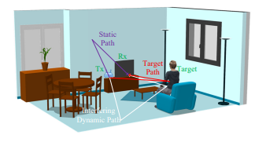
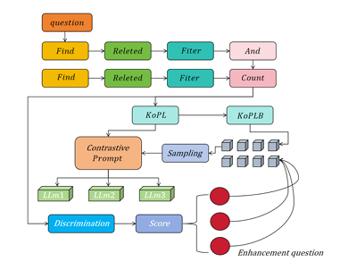
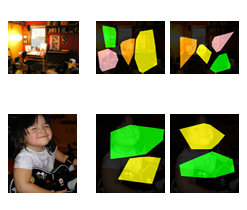
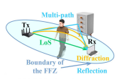
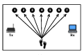

|
Weiyan Shi (石唯妍) I'm a PhD student at Context-Aware Interaction Lab, Singapore University of Technology and Design (SUTD), under the supervision of Prof. Kenny Choo. I received my Master’s degree from Peking University (PKU) in 2024, where I was supervised by Prof. Daqing Zhang, IEEE Fellow. Before PKU, I earned a Bachelor’s degree from Beijing Institute of Technology (BIT) in 2021. From 2023 to 2024, I worked as a research assistant at Institute for Infocomm Research (I2R), A*STAR. 🎀 Email: weiyanshi6@gmail.com |

|
News
[2024.10] 🎉 One paper has been accepted by IEEE Transactions on
Mobile Computing 2024
|
ResearchI'm interested in Human-Computer Interaction, Ubiquitous Computing and AI for Cyber-Physical Sensing. Most of my research focuses on sensing human behaviors through ubiquitous data sources, such as wireless signals, eye-tracking data, and speech. Recently, I have been exploring the use of large language models (LLMs) to assist in sensing and interpreting human interaction behaviors. |
|

|
SigCan: Toward Reliable ToF Estimation Leveraging Multipath Signal
Cancellation on Commodity WiFi Devices
Yang Li, Dan Wu, Jiahe Chen, Weiyan Shi, Leye Wang, Lu Su, Wenwei Li, Daqing Zhang* IEEE Transactions on Mobile Computing 2024 paper |
|

|
Contrastive learning for knowledge-based question generation in large
language models
Zhenhong Zhang, Jiajing Chen, Weiyan Shi, Lingjie Yi, Chihang Wang, Qian Yu arXiv |
|

|
Exploring Gaze Pattern in Autistic Children: Clustering, Visualization, and
Prediction
Weiyan Shi, Haihong Zhang*, Jin Yang, Ruiqing Ding, YongWei Zhu, Kenny Tsu Wei Choo arXiv |
|

|
Understanding the Diffraction Model in Static Multipath-Rich Environments for
WiFi Sensing System Design
Xuanzhi Wang, Anlan Yu, Kai Niu, Weiyan Shi, Junzhe Wang, Zhiyun Yao, Rahul C Shah, Hong Lu, Daqing Zhang* IEEE Transactions on Mobile Computing 2024 paper |
|

|
WiCross: I Can Know When You Cross Using COTS WiFi Devices
Weiyan Shi, Xuanzhi Wang, Kai Niu, Leye Wang, Daqing Zhang* UbiComp/ISWC Adjunct, 2023 paper |
|
Feel free to steal this website's source code. |